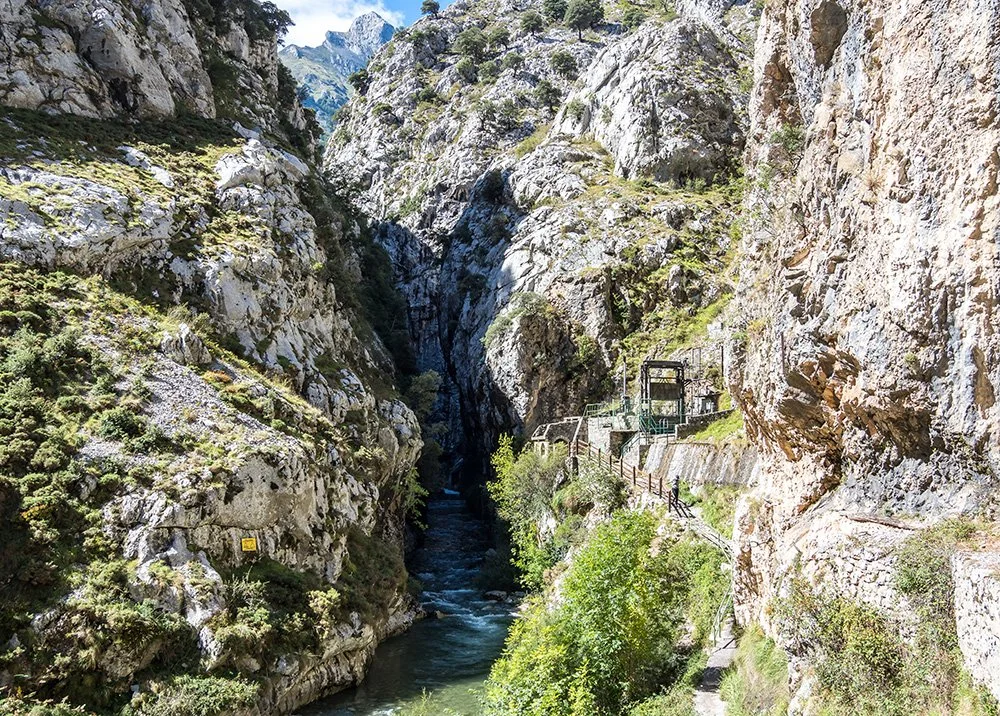

Vista panorámica desde el tramo final de la ruta
| Rutas recomendadas | ||
|---|---|---|
| Ruta familiar | Ruta de montaña | Alta dificultad |
| Sendero del Lago | Pico del Roble | Arista del Dragón |
| Paseo del Bosque | Sierra Alta | Cresta del Viento |
| Ruta del Río | Monte Azul | Pared Norte |